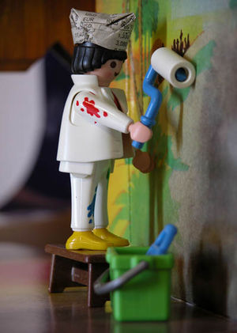
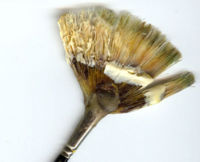
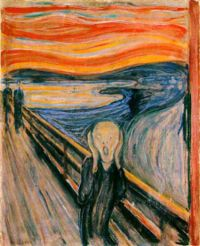

Pintor
 De: La Frikipedia, la enciclopedia extremadamente seria.
De: La Frikipedia, la enciclopedia extremadamente seria.
 Se les puede contratar y comprar
Más conocido como Tintoretus Tabardus Trufus, Rey de Copas o debido a las variedades diatópicas y diastráticas de la lengua vasca, Maldito Pintor. Se trata de una criatura mitológica de la familia de la monarquía bávara y el Rey nórdico Beowulf, que se encuentra en el quincuagésimosegundo eslabón de la jerarquía urbanita y en el tercer eslabón de la jerarquía delfínica, sin olvidar que ocupa la cúspide de la jerarqía de usuarios de zapatillas de mercadillo y los petos policromatizados con salpicadas de pintura acrílica. Habita en zonas como la llanura Algorteña aunque individuos ebrios y sin credibilidad afirman que ha sido visto todo tajado por las calles de Salou realizando comentarios machistas hacia mujeres desvalidas e indefensas. Se caracteriza por su, en ocasiones insultante, creatividad, su aspecto radiactivo, su machismo atroz y su léxico variado, capaz de pasar en una fracción de segundo de usar una palabra tan culta como tabardo a un vocablo tan vulgar como varillas.
Aspecto
Aunque la mayoría de los pintores siguen un patrón de físico y vestimenta, en zonas como la riviera maya y la margen derecha del nervión suelen presentar características totalmente independiente a los demás individuos de su especie.
Características
 Cuidado con los tonos calientes,y no utiliceis lava para pintar que luego queda gris y está feo
- Son extremadamente hábiles en el arte de perder dinero jugando al mus. Se caracterizan por usar expresiones como "Ataco a dobles" o incluso por su maravillosa, increible, insuperable e incandescente jugada maestra comunmente denominada como "el órdago a juego con 37 siendo postre". Así que si desean ganar dinero fácil, una vez localicen uno, insistan en jugar una partida contra él.
- Acostumbran a tener características zapas de mercadillo usualmente robadas al mas jacho vilmente e incluso por realizar usucapios al viejo estilo romano en los chiringuitos de salou. Si es usted uno de los propietarios de este negocio, por su seguridad cierre la persiana y resguardese de este padawan pintoril.
- Generalmente gente culta, acostumbrarán a demostrar sus dotes linguísticas a la menor oportunidad, con claro énfasis en metáforas e hipérboles llegando incluso a realizar giros lingüisticos y absolutamente novedosas metáforas hiperbólicas fáticas.
- Con gran facilidad para las lesiones deportivas precoces en acontecimientos deportivos a pequeña escala debido a virguerías inverosímiles.
- Tendencia a la utilización y posterior abandono de hembras humanas.
- La característica más trascendente es que , a simple vista, no se diferencian en nada a cualquier persona normal. No deben ser confundidos con los Artistas de coña.
Historia
Los primeros datos conocidos acerca de estas aberraciones cromosómicas datan del siglo VIII con la entrada de los musulmanes en la Península Ibérica y su continúa mezcla con los visigodos, suevos, alános y posteriormente con tribus almorávides. El primer dato constatado, una vez descartada la profesión de pintor de los neandertales de Atapuerca que impregnaron entre otras, las cuevas de Altamira con sangre de mamut, se trata de un escrito en la tapa de un yogur grabado con laser depilatorio que viajó a través del tiempo en un superultramegamaster microondas-radiotelevisor-intergaláctico con abundantes emisiones de rayos UVA y GAMMA. Más adelante encontramos a los grandes genios, como el de la lámpara de Aladino, amén de personajes ilustres como Leonardo Da Vinci, Miguel Angelo Buonarotti, Luis Enrique el asturiano y el niño del anuncio de Briseuntoque que le pinta el baño a Pablito con témpera de la buena. Se puede expresar lo que uno siente con la pintura.Ejemplo de este cuadro:¡Noooooooooo me han baneado en frikipediaaaaa!
Estatus
Dentro del reino de la Pictórica y los Frescos no hostelerizados podemos observar el afán de esta raza de seres subatómicos por diferentes ramas de periodismo como el periodismo de investigación, la prensa magenta e incluso el periodismo inexistente, recientemente inventado y cuya patente les atribuimos dado el escaso interés por su carrera y el creciente deseo de recontragilitransformarse en controladores aereos. En cuanto a los rituales de iniciación en esta maldita secta los pretendientes deberán golpearse el escroto con la cesta de la compra mientras sus maestros introducen un erecto coco por su recto. Una vez superada esta prueba los Maestres Pintaleques deberán azotar al advenedizo con rodillos de pintura acrílica y cinceles de gotelé. Dentro del mismo aprendizaje, cada alumno escogerá la rama de la pintura que más deseen:
- Pastelista: No confundir con pastelero. Usan el polvo para dibujar y pintar.Tienen control sobre la arena y el vidrio.
- Pintores de brocha gorda: Utilizan pintura al óleo, espátula, témperas, acrílico u otros elementos radiactivos como el Ioduro Bromopotásico Europio. Sus manos contienen peligrosos productos abrasivos, de ahi que carezcan de huellas dactilares y usan armas como el pincel espáda láser.
- Grafiteros: Se dedican a estampar su firma en paredes de propiedad tanto pública como privada con mensajes indescifrables como Mesh y Kratos (últimos estudios los asocian con el Olentzero).
- Dibujantes: Unos frikis que usan Cabroncillo, rotuladores de punta gorda y tinta china.
- Boteros: Cogen los botes de pintura y los tiran sin miedo al lienzo, así como que no quiere la cosa, como luego limpia su madre. A algunos sólo los separa una fina línea de los Artistas de coña. Son peligrosos cuando hacen un congreso de práctica al aire libre, te pueden dejar peor que una bandada de estorninos e incluso que 6 pidgeys en el nivel 11 haciendo remolino.
Autor(es):
- Cañonero
- Viento
- Nadaquever
- Rogalmar
- Harry El del Pote
- Gororo
- Estudiantezopenco
Frikipedia 2005-2016, Licencia
GFDL 1.2 - Extraído por FrikiLeaks